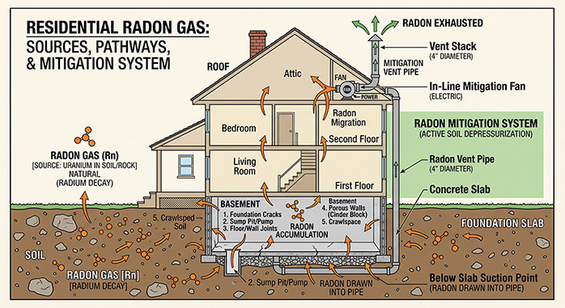
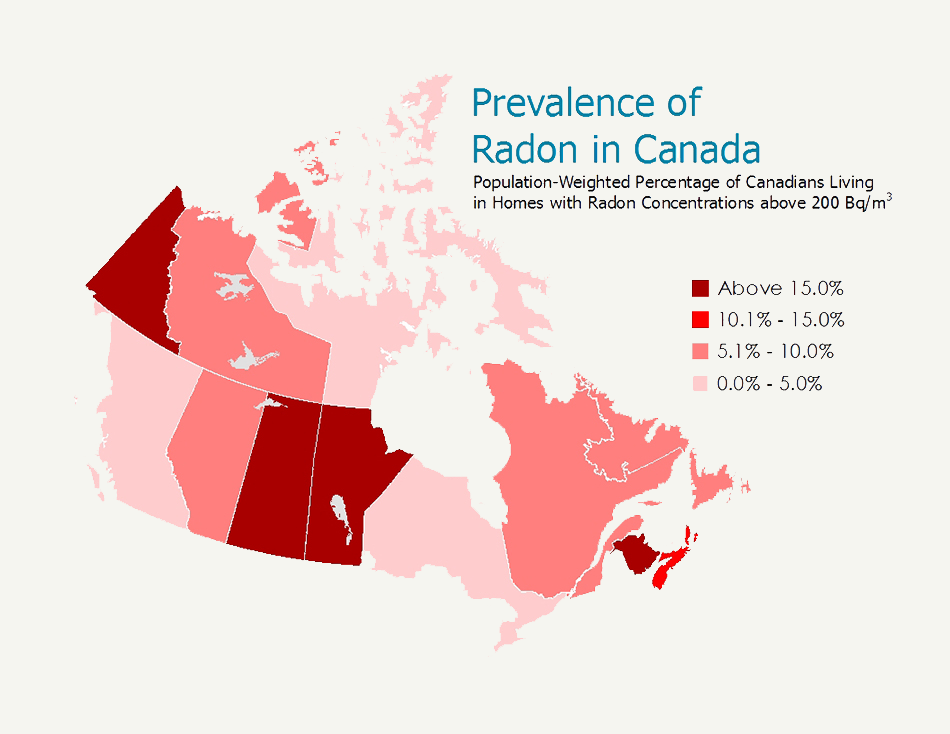
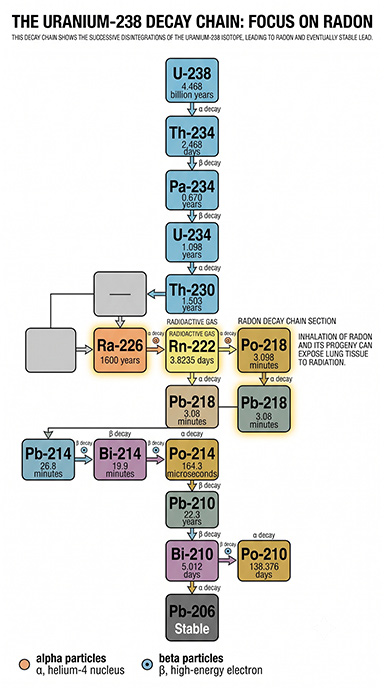

-
Radon Gas. Should I care?
Radon has been a recent concern to the public because of its possible effects on people’s health. According to the World Health Organization (WHO), they claim that radon could be the cause of lung cancer in 15% of the cases worldwide. In the U.S., the claim by the U.S. Surgeon General, Rich Carmona, is that about 20,000 Americans die from radon that is linked to lung cancer each year. It’s important to remember that these numbers are estimates. The effects of radon on people are long-term, sometimes decades later.
Where does radon come from?
Radon is a radioactive gas that is present almost everywhere, from the soil to the rocks in the ground. Radon (Rn-222) is a product of Radium (Ra-226), which is in a chain of other decay products originally derived from Uranium (U-238). Think of radon as the great, great, great, great-grandchild of Uranium.
Effect on Humans
When radon is discussed as a radioactive product (nowhere near the same levels as Uranium), we are concerned by the “Alpha Particles” it releases. Alpha particles are slow, don’t travel far, and are easily stopped by just a piece of paper. So, how can it be harmful to humans if it does not penetrate the skin? Radon is a gas, so if they are inhaled, it easily enters the body and the lungs. They don't go beyond the lungs, but the radiation from the radon can cause cell damage to the lungs.
Radon also has a short “Half-Life” of 3.8 days. What does that mean? It means radon takes 3.8 days to decay half of its radioactive elements and soon becomes radioactive. (compared to billions of years for Uranium)Radon in the Home
Radon is a gas that is not visible and has no smell or taste. Since radon is in the soil and rocks, it can enter the home through cracks in floors, gaps, or unsealed penetrations in floors and walls. All types of foundations, from basements, crawlspaces, or slab on grade, are affected. The gas is sucked into spaces in a home by a difference in air pressure. Air pressure moves from higher to lower pressure, and the air pressure in a typical house is lower than the air and soil around it. Other factors include atmospheric pressure changes, wind, and temperature differences. Radon is also heavier than air, so the lower part of the home, such as the basement, is more impacted.
The soil plays an important role in how much radon there is to penetrate the house. The amount of moisture in the soil, its permeability, as well as geological location, are factors. Radon moves more easily through permeable soils and more slowly in more moist soils.
Solutions?
Although it’s impossible to seal a home 100%, sealing any large cracks or openings helps mitigate the issue of radon gas entering the living space. Creating a vacuum under the foundation can help ease the air pressure difference. Finally, venting from the soil to above the roof via PVC piping can find a pathway out of the home.
From the Canadian government website: “The most common radon reduction method is called sub-slab depressurization. With this solution, a pipe is installed through the foundation floor to an outside wall or up through to the roofline. A small fan is attached which draws the radon from below the house to the outside before it can enter your home. Increasing ventilation and sealing major entry routes can also help reduce radon levels, but their effectiveness will be limited depending on how high the radon level is and the unique characteristics of each home.”Measurements—Radon Levels?
How is radon measured, and what are acceptable levels?
- Radon is measured in picocuries per liter of air – pCi/L.
- The average indoor radon level is 1.3 pCi/L. Average outdoor levels are 0.4 pCi/L
- The EPA’s action level for radon is 4 pCi/L or 0.02 WL. (Working Level)
What does that mean? If a house is 4 or above pCi/L then actions shall be taken to mitigate the levels in the United States.
Picocurie (pCi/L): a unit of radioactivity corresponding to an average of one decay every 27 seconds in a volume of one liter. (used mainly in the U.S.)
Becquerel (Bq): The SI or International System of Units of the definition of activity is 1 Bq = 1 disintegration per second. One picocurie per liter of radon is the same as 37 becquerels per cubic meter. (This unit is used globally)
Source: InterNACHI.In Canada:
According to the government of Canada website, the Canadian guideline for radon is 200 becquerels per cubic meter (Bq/m3).
“If your radon test result is above the Canadian guideline of 200 Bq/m3 you should hire a certified radon professional to determine the best and most cost-effective way to reduce the radon level in your home.
Techniques to lower radon levels are effective and can save lives. A radon mitigation system can be installed in less than a day and in most homes will reduce the radon level by more than 80% for about the same cost as other common home repairs.
Health Canada recommends that the contractor be certified as a radon mitigation professional from the Canadian National Radon Proficiency Program (C-NRPP)."Map of Canada showing possible concentrations of Radon by area
According to the Government of Canada sources, the Radon concentrations in Ontario are among the lowest in the country, with an average of 0.0% to 5.0%.

Source: Government of Canada
-

The "Decay Chain" with Radon (in Red). The half life of each is shown under the element symbols.